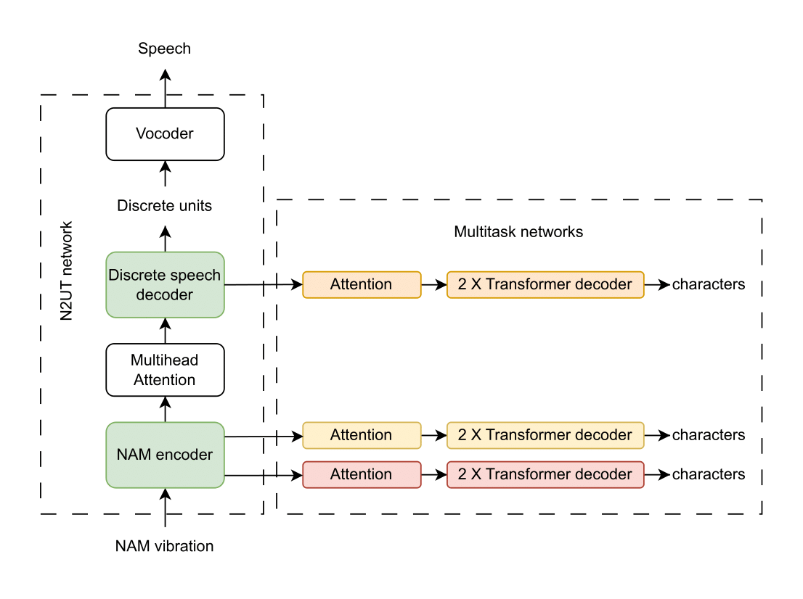

Improved NAM-to-Speech Conversion with Multitask-Enhanced Autoregressive Models
Anonymous submission to InterSpeech 2025
Abstract:
We propose an alignment-free, end-to-end Non-Audible Murmur (NAM)-to-Speech conversion model. Unlike conventional two-step methods that first train an acoustic model for NAM-text alignments and then use a non-autoregressive (NAR) model for conversion, our autoregressive (AR) approach directly learns alignments, enabling highly intelligible speech generation. Incorporating synthetically generated training pairs and multitask training for character recognition results in a $59.19$\% reduction in word error rate (WER) compared to the current state-of-the-art (SOTA) method across two public datasets. In addition to evaluating the methods in a speaker-specific context, we demonstrate the zero-shot capability of our model and, through ablation studies, objectively highlight the effectiveness of multitask training for the NAM-to-Speech conversion task.
Proposed Method

Illustration of the end-to-end NAM-to-Speech conversion framework. The framework comprises: (1) a transformer based NAM-to-unit translation (N2UT) model with a NAM encoder and discrete speech decoder, (2) multitask networks conditioned on both the encoder and decoder, and (3) a vocoder trained to convert the predicted units into speech.